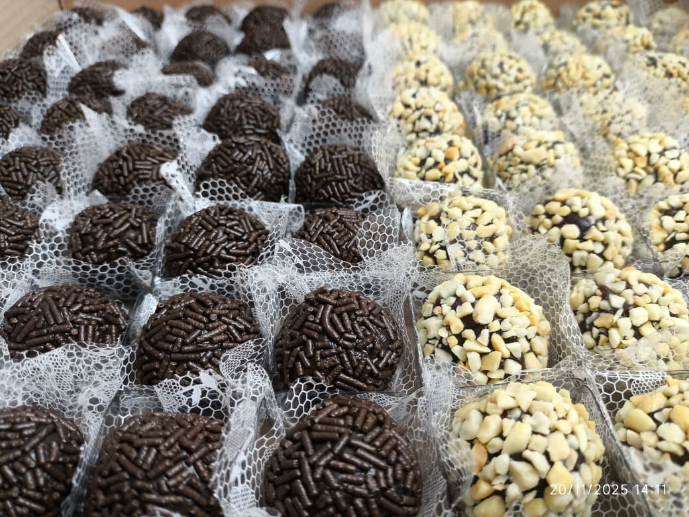
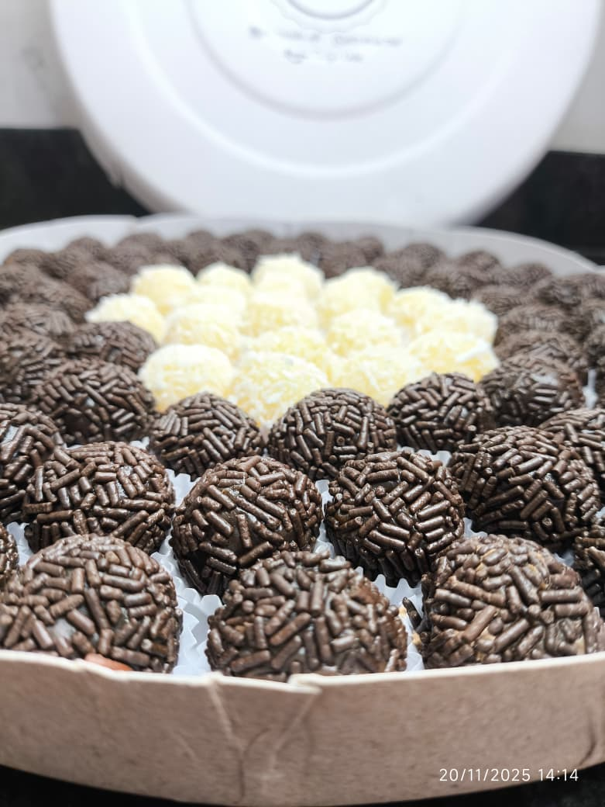
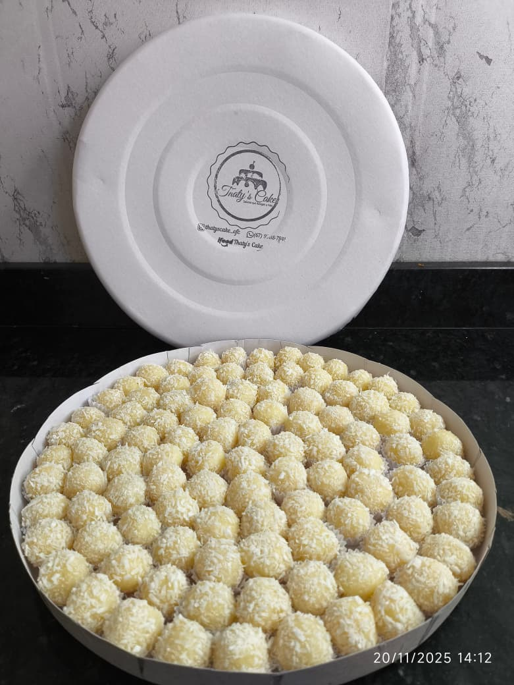
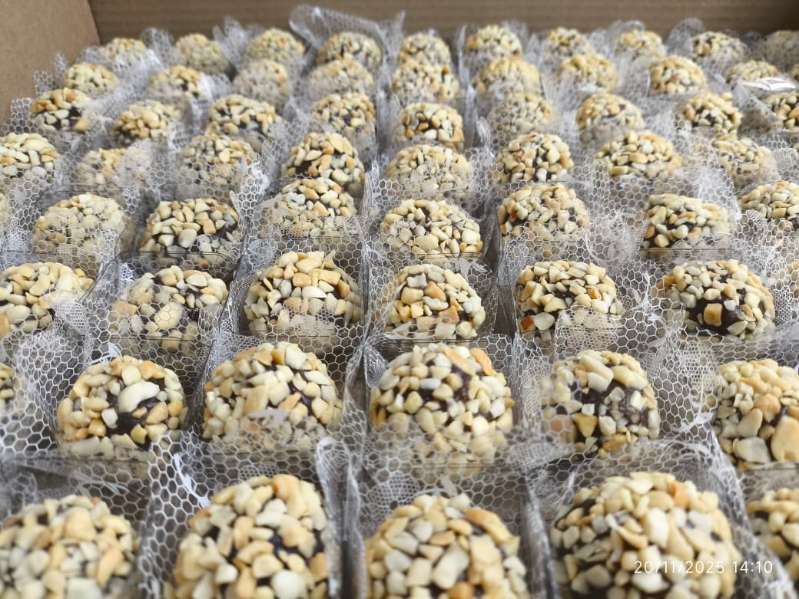

Clássico com morangos
Cobertura branca e a cor viva da fruta.
Feitos pela Thaty’s Cake
Cada bolo desta galeria foi feito para uma celebração real.
Cobertura branca e a cor viva da fruta.
Tema Cinderela, com detalhes em azul e rosa.
Rosetas, branco e pequenos pontos dourados.
Bolo retangular com acabamento em azul.

Para acompanhar cada celebração
Além dos bolos, a Thaty’s Cake também prepara docinhos para compor os momentos de comemoração. Escolha suas referências e combine os detalhes no atendimento.

Uma apresentação para acompanhar o bolo.

Uma das opções mostradas nas fotos.

Uma opção com textura e contraste.
Dúvidas frequentes
Informações importantes para planejar sua comemoração com tranquilidade.
Atendemos em Campo Grande - MS. Para combinar retirada ou verificar a disponibilidade de entrega, fale conosco pelo WhatsApp.
Pedimos que a encomenda seja feita com pelo menos 48 horas de antecedência.
Conte um pouco sobre a sua celebração no formulário e receba um atendimento pelo WhatsApp para alinhar os detalhes.
Solicitar meu orçamento ↗Sim. Você pode solicitar bolo, docinhos ou os dois juntos para compor a sua comemoração.
Avaliações no Google
“Maravilhoso o bolo, super atenciosa, preço acessível. Bolo muito bom e gostoso; os docinhos nem se fala.”
“Tudo feito com carinho, docinhos uma delícia, bolo uma delícia, massa boa e muito recheado.”
“Delícia de bolo e o melhor: à pronta entrega! Obrigada por salvar nossa festa. Todo mundo amou.”
“Superou minhas expectativas! Bolo molhadinho, gelado e bem recheado. Na decoração acertou em cheio.”
“Já é a segunda vez que peço bolo. Massa leve, recheio não é enjoativo e é super gostoso.”
“Bolo maravilhoso, decoração perfeita como pedi e pontualidade e compromisso nem se fala.”
“Tudo lindo, muito saboroso, muito capricho no atendimento, entrega, sabor. Tudo perfeito.”
“O bolo foi um sucesso! Estava perfeito de aparência e sabor, não ficou enjoativo e acabou rápido.”
“Salvou a festa e todos gostaram. Bolo delicioso e lindo, atendimento impecável. Eu recomendo!”
“Bolo de 4 leites maravilhoso. Muito obrigada pelo atendimento!”
“Massa leve e molhadinha, recheio suave e delicioso. A decoração estava lindíssima.”
“Bolo maravilhoso, bem molhadinho, super recheado. Todo mundo amou.”
“Amei o bolo que ela fez, simplesmente lindo e uma delícia. A realidade ficou melhor que a expectativa!”
Sua próxima comemoração começa aqui
Bolos e docinhos para a sua ideia ganhar forma.